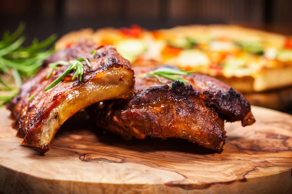

This delicious mouth watering barbecued ribs recipe is a joy to the eyes and to the tastebuds. I will guide you step by step to the perfect barbecue recipe the whole family can enjoy.
Yield: 6 servings
Prep: 1 hr 5 min
Cook: 2 hr 30 min
Combine the brown sugar, chili powder, 1 tablespoon salt, 1 teaspoon black pepper, the oregano, cayenne, garlic powder and onion powder in a small bowl and rub the mixture on both sides of the ribs. Cover and refrigerate 1 hour or overnight.
Preheat the oven to 250 degrees F. In a roasting pan, combine the broth and vinegar. Add the ribs to the pan. Cover with foil and tightly seal. Bake 2 hours. Remove the ribs from the pan and place them on a platter. Pour the liquid from the pan into a saucepan and bring to a boil. Lower the heat to a simmer and cook until reduced by half. Add the barbecue sauce.
Preheat an outdoor grill to medium high. Put the ribs on the grill and cook about 5 minutes on each side, until browned and slightly charred. Cut the ribs between the bones and toss them in a large bowl with the sauce. Serve hot.